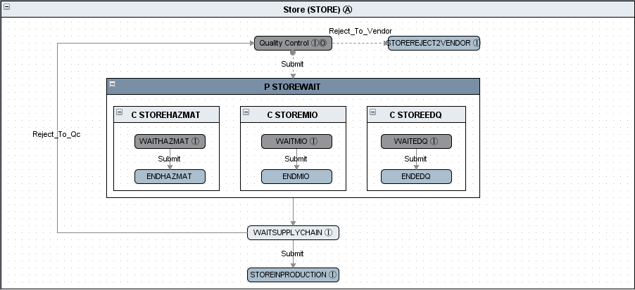

Sku Generation for Integration Testing: The goal is to provide the Integration Software Engineer to generate random sku numbers for testing purposes. The application can generate any quantity of skus. The user can also generate skus manually one by one. This will help to support a common suite of E2E automated (transactions/functions) test scripts across enterprise portfolios. The hope is to increase the speed of Integration testing by providing the ability to generate varying quantities of test data on demand.
The tool will enable delivery of test data solutions to Software Engineering testing teams increasing efficiency of Integration testing lifecycle.
